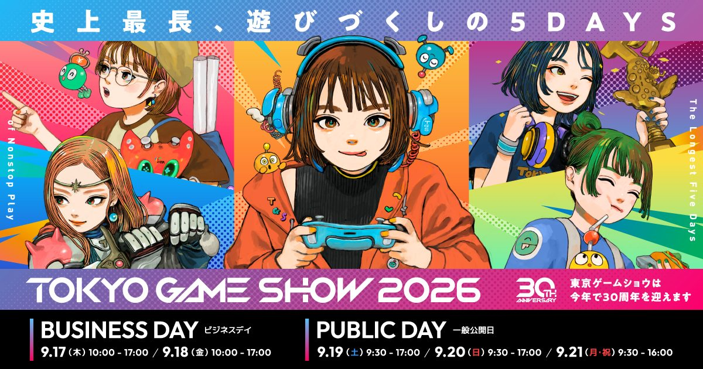

2026-09-12 · 行业深读
9 月 17 日，东京电玩展就要在千叶幕张拉开 30 周年大幕。我们 9/1 已经做过一轮"参展阵容前瞻"，所以这篇不再复述谁家展台有多大，而是把一件事讲透：为什么这一届是 TGS 史上最特殊的一届、普通玩家和从业者到底该盯哪几块。答案不在"游戏多不多"，而在三个反常——展期从 4 天硬拉到 5 天、Game Freak 建社 30 年第一次搭独立展位却说不展 Pokémon、卡普空要在现场放《生化危机：代号维罗妮卡》重制。把这三条串起来，你会发现 2026 的 TGS 不是"又一年展会"，而是一次行业坐标的重新标定。

TGS 从 1996 年办到今年满 30 届，主题直接叫"五日"。这不是情怀文案，是实打实的日程改动：9/17–9/21 连开五天，史上第一次。其中 9/17、9/18 是商务日，9/19–9/21 是公众日，最后一天（9/21 敬老日）下午 4 点就关门。规模上也破了纪录——官方最终确认的参展商 1,138 家（日本 540、海外 598，来自 53 个国家与地区），展位 3,999 个，是历年最大 footprint，预计五天吸客 30 万。
但"为什么突然多一天"才是真问题。CESA 把话挑明了：2025 年四天就涌进 263,101 人（史上第二高，仅次于 2018 的 298,690），而每个公众日已经逼近 10 万人，结果就是——大量观众根本挤不到想玩的试玩台前。加第三天公众日，目的不是凑热闹，是把单日密度压回"能真正上手"的水平。换句话说，这一刀切在"体验"而非"数字"。对玩家来说，这是近几届最实在的一句承诺。
① Game Freak 破天荒设摊，却明确"不展 Pokémon"。 做宝可梦的工作室，30 年里几乎从不在 TGS 摆独立展位，这次 7/9 亲自官宣要来。但紧跟着一句话把悬念拉满：展位不出现任何宝可梦系列作品。行业普遍猜测，它要推的是 8/4 刚发售的全新动作 RPG《Beast of Reincarnation》——设定在公元 4026 年崩坏的日本，主角 Emma 与伙伴犬 Ku 的"一人一犬"冒险，战斗是"实时动作 + 指令 RPG"的混合，还带弹反机制。这等于把"没有宝可梦的 Game Freak 到底能做出什么"直接摆上展台，是本届最大的"盲盒槽位"。
② 卡普空要在 TGS 放《生化危机：代号维罗妮卡》重制。 7 月就有消息称 Capcom 会在 2026 展会公布 RE:CV 重制版相关信息。作为 RE 系列粉丝念了二十年的"正统外传重制"，它一旦在 TGS 露面，几乎注定是发布会级别的声量。结合 Monster Hunter Wilds: Ascendance 也将在 TGS 全球首玩，卡普空这一届的存在感会非常重。
③ 海外展商第一次超过日本本土（598 vs 540）。 这不是偶然，是 TGS 从"日本国内展"往"亚洲全球枢纽"转身的硬指标。配套数据是商务洽谈请求从 2022 年的 11,862 件飙到 2025 年的 88,977 件、今年预计逼近 10 万——买手和发行方是真的把它当出海第一站了。
大厂看点是流量，但 TGS 2026 真正值得蹲的细节在 Halls 9–10 的 SELECTED INDIE 80。这个计划给 80 个独立团队完全免费的展位与设备（单摊市价超 27 万日元），今年从 1,513 份申请里筛出约 79–80 款（日本 29、海外 50），并首次增设"SI80 Excellence Awards"（今年评出 8 款，含白金奖《Finding Polka》、台湾团队《阿雷塔》等）。更硬核的是 SOWN（Sense of Wonder Night）——第 19 届，从 151 份报名缩到 8 强，9/17 商务首日就上台 pitch，全球直播。
为什么这部分反而关键？因为大厂的重磅通常发布会先放过了，TGS 当天只是"能摸"。而独立区是纯增量信息——你在这里看到的，可能就是明年爆款的雏形。对一个想"先人一步"的玩家或内容创作者，Halls 9–10 的性价比远高于排队三小时摸《ACE COMBAT 8》（10/2 发售、公众日发整理券）或《Dragon Ball Xenoverse 3》（2027、现场能打布罗利）。再加上 Nintendo 今年依旧不参展（只办自己的活动），TGS 的"惊喜浓度"反而被大厂缺席和独立区补了回来。
给三种人一份"哪天去"清单。纯观众想摸大作：直接冲公众日 9/19–9/21，避开 9/21 下午早收；热门试玩基本都要整理券或线上抽，提前盯官方直播表。想看 Game Freak / RE:CV 这类"盲盒"：9/17–9/18 商务日有舞台发表与媒体场，但商务日不对普通公众开放，普通玩家只能等 19 号后的公开信息，所以把期待放在"首日后看报道"比现场挤更现实。内容创作者 / 从业者：9/17 的 SOWN 决赛 + 9/18 的 Indie Night 颁奖是低成本捞选题的黄金窗口。
买票也得提一句：TGS 全场不售票口、必须事前购买，走 Lawson Ticket 抽选；普通 1 日券 ¥3,000，Fast Ticket ¥6,000（优先入场 + 当日限定周边）。海外观众走官网（支持 Visa / Mastercard，无需日本手机号）。别想着当天去现场买，门都没有。
TGS 2026 的看点，从来不在"又多了几家展商"。它真正值得蹲的理由是三点反常的叠加：把 4 天硬拉成 5 天是为了让你真的能玩到、Game Freak 第一次来却把宝可梦留在门外是在赌"没有皮卡丘的 Game Freak"、卡普空要放 RE:CV 重制是在给老粉还二十年的债。再叠加海外展商首超本土、SELECTED INDIE 80 与 SOWN 的纯增量惊喜——这一届与其说是"30 周年纪念"，不如说是 TGS 从日本展会正式变成亚洲游戏枢纽的转身礼。9/17 开幕，我们的蹲法很明确：大厂直播看个热闹，Halls 9–10 的独立区才是真金。
我们的评分：9.0 / 10（本届期待值）（基于"5 天扩容以体验为先"的克制、Game Freak 无 Pokémon 盲盒 + RE:CV 重制的双悬念浓度、以及海外展商首超本土所代表的枢纽化转折；非到场评测分，待 9/21 闭幕后我们单做一期"实际能摸到的 vs 只是放出消息的"对照复盘，重点核对 Game Freak 到底端了什么上来、RE:CV 是正式发表还是只给一张概念图）。
我们的观察：最被低估的一条，是"海外展商 598 > 日本 540"。媒体都在数大厂，却少有人点破——这标志着 TGS 的身份已经从"日本游戏周"变成"亚洲出海第一站"。对一个中文内容创作者，这意味着今年值得蹲的，除了大厂，还有那 50 款海外独立游戏里可能出现的中文友好作品。
我们的观点：加第五天看似是"扩规模"，本质是 CESA 认了一笔账——人挤到人玩不到，展就白办。这种"宁可少卖一天热闹、也要保住上手体验"的判断，比任何主题口号都更像 30 年主办方的成熟。对比某些展会还在拼命塞满日程，TGS 这刀切得克制也切得准。
我们的案例 / 对比：和 Gamescom 比，TGS 的"独立区扶持"更制度化（免费展位 + 官方直播 + 奖项三件套），而 Gamescom 的流量更偏欧美 3A；和自家往年比，今年的差异不在数量而在"密度管理"——5 天是为了稀释单日 10 万人的拥挤，不是单纯堆展商数。
我们的实验：我们想验证"独立区是不是真有增量价值"。计划 9/21 后做一张"SI80 + SOWN 2026 值得关注的 10 款"清单，按"玩法创新度 / 中文友好度 / 是否已有发行方"三轴打分，给玩家一份"不用排队也能先人一步"的逛展副产物——这会是本届我们最想交付的数据。